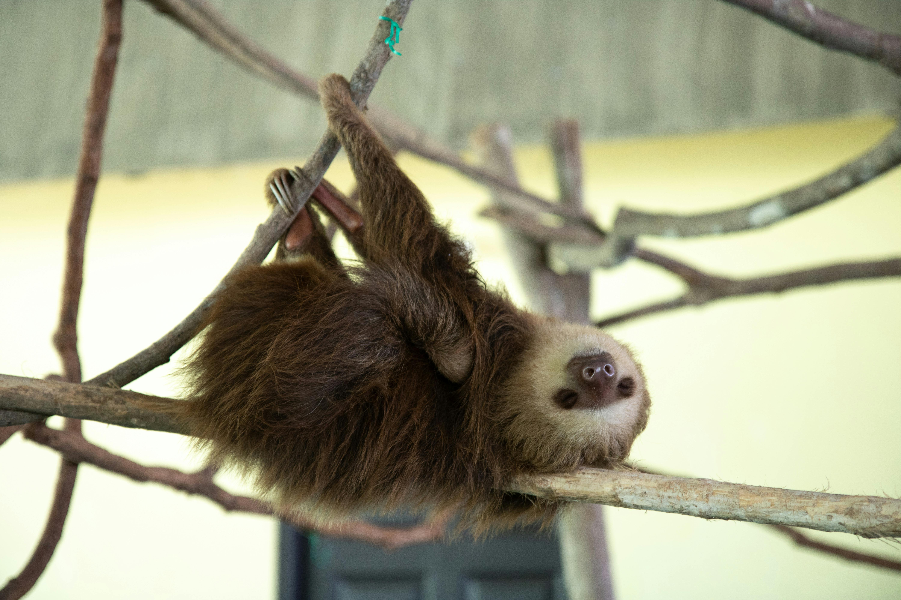
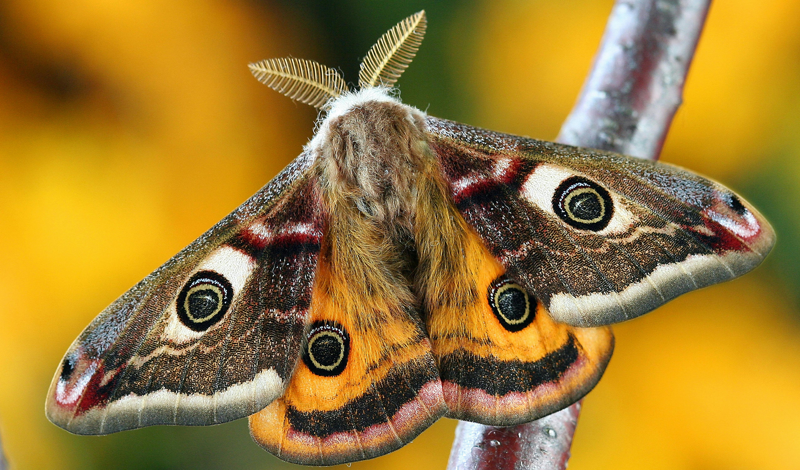
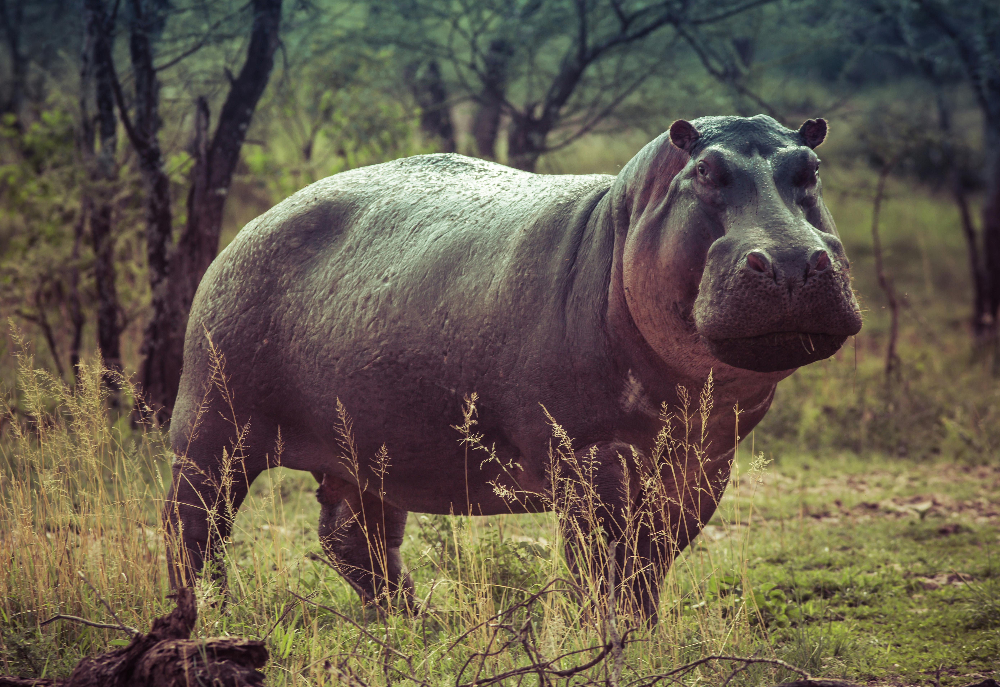
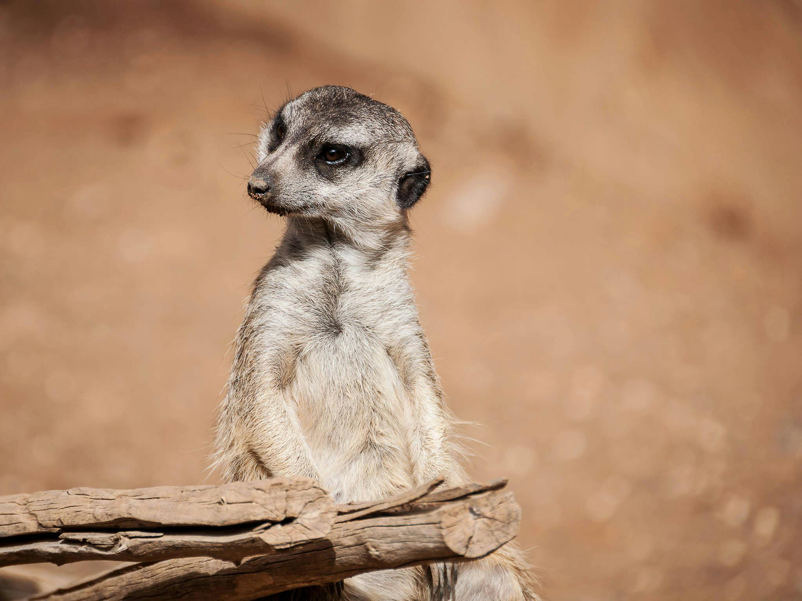

Meet the Animals:
Pingu

Type: Penguin
Birth year: 2022
Color: Tuxedo
Description: Pingu is a playful and curious penguin who loves sliding on ice and making new friends.
Marcel

Type: Rhesus Monkey
Birth year: 2022
Color: Beige
Description: Marcel is a mischievous and intelligent rhesus monkey known for his playful antics and quick learning abilities. However he is a bit shy with us humans, and prefers to look at us through mirrors and not make direct eye contact.
Pandy

Type: Giant Panda
Birth year: 2013
Color: Black and White
Description: Pandy is a gentle and calm giant panda who enjoys lounging and munching on bamboo. She spends most of her time playing with her son Po.
Cinnamon

Type: Capybara
Birth year: 2019
Color: Brown
Description: Cinnamon is a friendly and social capybara who enjoys spending time with other animals and humans alike. She is the ambassador for frendship and spreads clam wherever she goes.
Tigger

Type: Tiger
Birth year: 2020
Color: Orange with Black Stripes
Description: Tigger is a majestic and powerful tiger known for his strength and striking appearance.
Blue

Type: Kingfisher
Birth year: 2024
Color: Blue and Orange
Description: Blue is a vibrant and agile kingfisher known for his impressive fishing skills.
Ace
Type: Sloth
Birth year: 2014
Color: Brown and White
Description: Ace is a laid-back and slow-moving sloth who enjoys hanging out in the treetops. He once met David Attenborough, but did not seem to amused after the meeting.
Chantilly
Type: Giant Moth
Birth year: 2025
Color: Light Brown, White, Red, and Orange
Description: Chantilly is a delicate and nocturnal moth who flutters gracefully under the moonlight.
Gloria
Type: Hippopotamus
Birth year: 1997
Color: Grey
Description: Gloria is a massive and gracious hippo who enjoys wallowing in the mud and lounging in the water. But her demeanor is not to be confused with kindness, for she has a terrible mood and will attack if her boundaries are crossed.
Rocket

Type: Raccoon
Birth year: 2021
Color: Grey with Black Mask
Description: Rocket is a clever and resourceful raccoon known for his quick thinking and love for shiny objects. During night he can often look up at the stars, deeply immersed in thought.
Shelly

Type: Sea Turtle
Birth year: 1973
Color: Green
Description: Shelly is a graceful and wise sea turtle who has traveled the oceans for decades.
Timon
Type: Meerkat
Birth year: 2018
Color: Sandy Brown
Description: Timon is an alert and energetic meerkat who loves standing guard for his group and digging through the desert sands. According to rumors he has been seen playing with one of the warthogs.